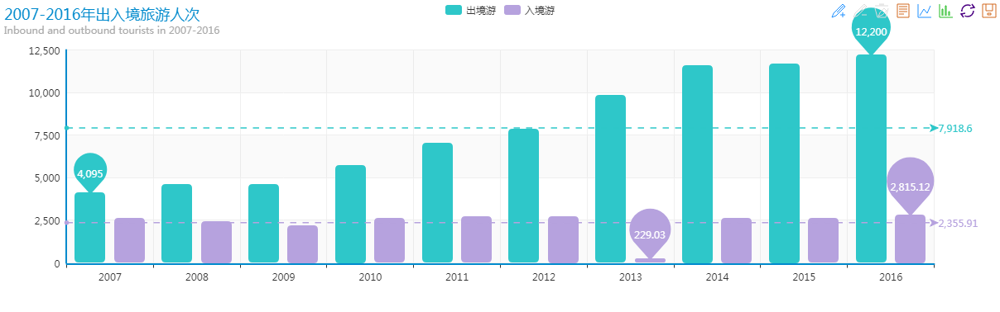
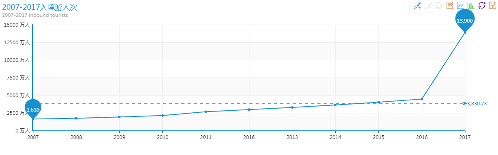
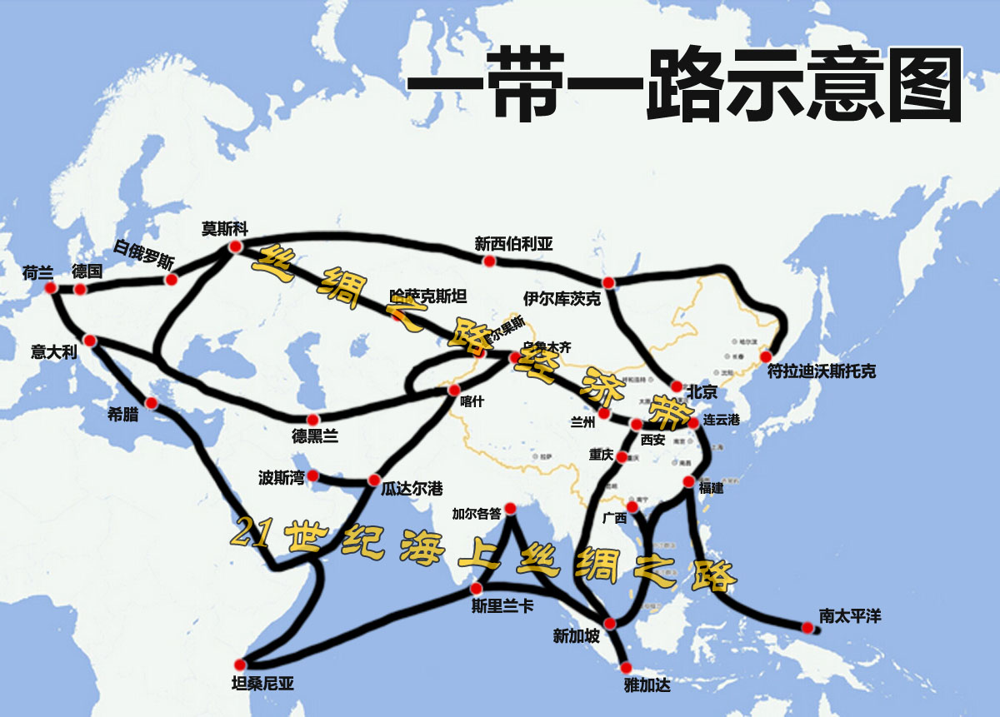
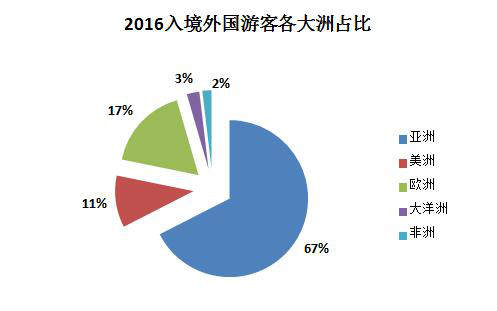
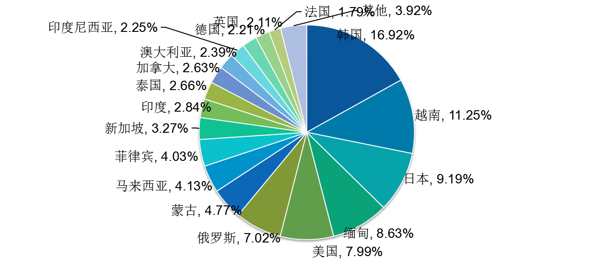
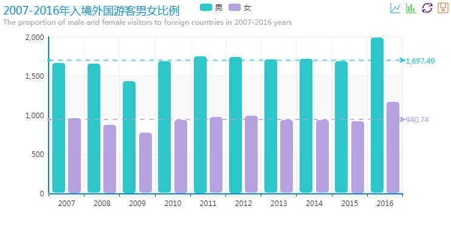
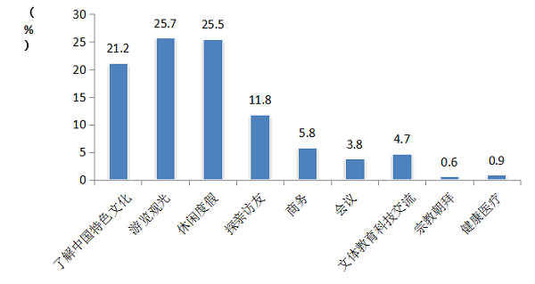
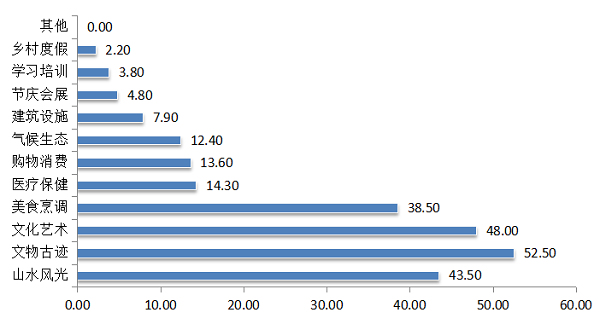
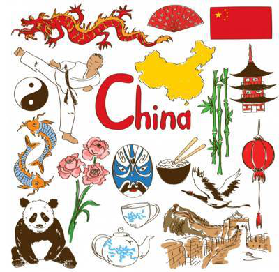

“一带一路”下的入境游
一直以来，我国出境游和入境游就存在较大逆差，出境游人次呈井喷式发展，但入境游却相差甚远。
根据国家统计局数据显示,我国入境游客由2005年的12029.23万人次增长到2015年的13382.04万人次,11年间增幅为11.2%,年均仅增一个百分点,与2005~2015年中国大陆居民出境人数312.9%的增幅相比差距颇大。2017年，全球化智库(CCG)与携程旅行网发布的《从出入境旅游看中国全球化发展》指出,我国入境游客增速低于发达经济体和新兴经济体入境游客的增速,同时低于亚太地区发展的整体水平。
2007-2016年数据显示，出入境游人次逆差值明显逐渐增加。在十年内，入境游人次基本呈稳定状态，无明显增幅或降落，但在2013年达到最低值为229.03万人次，2016年达最高值为2815.12万人次；出境游人次明显增长，并在2016年达高值为12200万人次。
究竟是什么原因导致了出入境游逆差值的突出呈现呢？CCG报告认为,我国国际游客赤字是经济发展与全球化推动下所产生的社会效应，是必然趋势。随着我国经济的发展和居民收入的增加,尤其是我国国际合作的广泛开展与中产阶级规模的逐步扩大,出国游成为越来越多游客的选择,且其热度也在不断上升,增长速度远高于入境游客的变化速度。
这种逆差值现象在2017年突发改观：
2018年6月27日，由中国旅游研究院主办的《中国入境旅游发展年度报告2018》、《中国出境旅游发展年度报告2018》发布会暨“一带一路”旅游合作研讨会在京举行。
报告显示，2017年入境旅游人数为13948万人次，同比增长0.8%，其中外国人入境市场同比增长3.6%，“一带一路”沿线国家活跃度明显上升。2017年全年，中国公民出境旅游人数13051万人次，入境游人次首次超过出境游。当前，中国入境旅游市场特别是外国人入境旅游市场，进入到了恢复增长的新通道和总体回升的新阶段。
其中，最主要的原因在于“一带一路”战略的发展带动。
“一带一路”的提出， 对我国入境旅游发展产生两方面的拉动作用：一方面，“一带一路”将从国家战略高度引导我国入境旅游宣传推广和客源市场开发工作进一步向“一带一路”沿线国家聚焦，便于突出工作重点，集约化开发境外客源市场，入境旅游产业在树立和优化国家形象、服务国家总体战略部署方面的重要性将进一步增强;另一方面，“一带一路”的落地，有助于政府和产业界结合入境游客的需求特点，构建适销对路的旅游产品体系，这有助于推动各地区结合自身区位优势与旅游资源特色，构建覆盖全国及“一带一路”沿线国家线路的体系，有助于统筹各地区精选特色旅游产品，推进区域旅游合作，构建世界级跨国精品线路体系，有助于“一带一路”沿线区域的基础设施改善和商业投资环境优化等，促进东部主要旅游客源市场进入中西部旅游资源集中的目的地，优化入境旅游流在中国境内的分布格局，并有助于提升周边国家与中国边境省份之间的边境旅游。
显而易见，随着一带一路的带动和其他方面的发展，我国国内旅游市场高速增长，入出境市场平稳发展，供给侧结构性改革成效明显。
另外，我们整理了有关入境游的往年数据，从中发现分析其变化发展。
一、有关入境客源
2016全年，入境外国游客人数3148 万人次，亚洲占67.5%，美洲占10.7%，欧洲占17.3%，大洋洲占2.6%，非洲占1.9%，其他国家占0.0%。
 从客源结构看，2016年国外客源地排名前十依次为，韩国、越南、日本、缅甸、美国、俄罗斯、蒙古、马来西亚、菲律宾和新加坡，2017年排名前十的旅华客源国分别是：缅甸、越南、韩国、日本、俄罗斯、美国、蒙古、马来西亚、菲律宾、印度。综合来看，入境客源市场结构已显露出优化趋势，“一带一路”沿线国家在入境旅游市场中的活跃度正持续上升。
二、有关入境游客性别、年龄分布变化
从男女比例来看，2007-2016年间，入境男性游客平均人次高于女性。
对于年龄，25-44岁一直是占比最高的部分，其次为45-64岁。2016年全年， 25-44岁游客占比为46.8%，45-64岁游客占比为34.25%。占比最少的游客年龄结构在14岁以下为3.64%。
近年来，游客年龄变化总体上由年轻化的单一模式逐渐转变为年龄层次结构多样化，14岁以下、65岁以上的老人和孩子逐渐增多。这两类人群在未来仍有很大的市场空间可以挖掘，潜力十足。
三、有关入境目的
近10年来，游客主要旅行目的是游览观光以及休闲度假。2017年，游客入境目的中，会议/商务占13.3%，观光休闲占37.1%，探亲访友占2.6%，服务员工占14.8%，其他占32.3%。对于入境旅游市场需求方面，游客消费水平依然偏低。
另外，2017年受访游客表示，对文物古迹、山水风光、文化艺术、美食烹调是游客最为喜爱的旅游项目。
CCG报告认为，中国入境旅游正稳步进入回升通道，但基础支撑有待进一步夯实，中国入境旅游依然面临来自外部和内部的诸多困难和挑战。更加便利的旅行服务和更好的旅行体验在入境旅游发展中的重要性进一步上升。
中国拥有很多丰富的自然资源、渊源的历史文化、回味无穷的美食和快速发展的经济体系，而今恰逢构建覆盖全国及“一带一路”沿线国家的旅游产品体系和高质量跨国精品产品体系，将从根本推动入境旅游的发展。
资料来源：国家统计局 中国旅游研究院